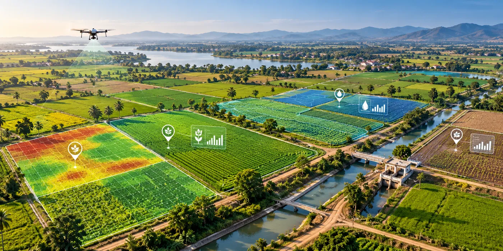

The Assignment
The assignment involved developing a centralized smart agriculture platform to bring together information from multiple sources and make it easily accessible to farmers, scientific communities and policymakers.
Developed in association with the World Bank, the solution was intended to improve agricultural decision-making by providing users with timely, site-specific information through accessible web and mobile platforms.
The platform needed to support farmers in managing critical factors such as fertilizer utilization, water requirements and crop growth while accounting for the multiple dynamic variables that influence agricultural productivity.
Our Approach
CS TECH Ai developed an integrated ICT-based smart agriculture solution that consolidated multi-source agricultural information within a centralized decision-support environment.
The engagement included:
- Development of a centralized ICT platform for agricultural decision support
- Integration of data from multiple sources into a common information environment
- Delivery of information through user-friendly web and mobile platforms
- Creation of site-specific databases to support focused agricultural interventions
- Decision support for fertilizer utilization and management
- Assessment of crop water requirements
- Monitoring of crop growth parameters across different stages
- Integration of multiple dynamic factors affecting crop performance
- Provision of relevant information to farmers, scientific communities and policymakers
- Farmer-centric advisory and decision support to encourage more informed agricultural practices
The platform transformed diverse agricultural data into accessible information that could be used by different stakeholders to make more timely and informed decisions.